- Общие сведения о неравенствах
- Системы линейных неравенств с одной переменной
- Операции над множествами
- Обобщенное понятие модуля числа
Продолжаем изучать модуль числа. Сегодня мы научимся решать неравенства с модулем.
Чтобы решать неравенства с модулем, нужно прежде всего уметь решать простейшие линейные неравенства, а также знать что такое модуль и как его раскрывать.
Независимо от того, решаем мы уравнение или неравенство, нужно уметь раскрывать модуль.
Рассмотрим к примеру простейшее неравенство с модулем:
|x| > 2
Чтобы решить данное неравенство раскроем его модуль.
Если подмодульное выражение больше или равно нулю, то исходное неравенство примет вид:
\[x > 2\]
Решением этого неравенства является множество всех чисел, бóльших 2. Отметим их на координатной прямой:
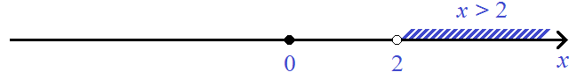
А если подмодульное выражение меньше нуля, то исходное неравенство примет вид:
\[-x > 2\]
Умнóжим обе части этого неравенства на −1. Тогда полýчим неравенство x < −2. Решением этого неравенства является множество всех чисел, мéньших −2. Отметим эти решения на том же рисунке, где мы отметили решения для неравенства x > 2
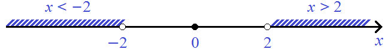
Забавно, но получившиеся промежутки x < −2 и x > 2 являются ответом к нашей задаче. Если в исходное неравенство |x| > 2 подставить какое-нибудь значение x, удовлетворяющее данному неравенству, то это значение будет принадлежать промежутку (−∞ ; −2) или промежутку (2 ; +∞).
То есть решением исходного неравенства является совокупность из x < −2 и x > 2
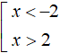
Совокупностью неравенств мы будем называть несколько неравенств, объединённых квадратной скобкой, и которые имеют множество решений, удовлетворяющих хотя бы одному из неравенств, входящих в данную совокупность.
Чтобы записать окончательный ответ, промежутки x < −2 и x > 2 следует объединить. В математике знаком объединения служит ∪. Тогда:
x ∈ (−∞ ; −2) ∪ (2 ; +∞)
Знак объединения ∪ читается как «или». Тогда запись x ∈ (−∞ ; −2) ∪ (2 ; +∞) можно прочитать так:
Значение переменной x принадлежит промежутку (−∞ ; −2) или промежутку (2 ; +∞)
Действительно, если подставить какое-нибудь значение x, являющееся решением исходного неравенства, то это значение будет принадлежать промежутку (−∞ ; −2) или промежутку (2 ; +∞).
Например, число 3, является решением исходного неравенства |x| > 2
|3| > 2 ⇔ 3 > 2
Значение 3 принадлежит промежутку (2 ; +∞). Также оно удовлетворяет хотя бы одному из неравенств совокупности , а именно неравенству x>2.
Значение −4 тоже является решением исходного неравенства |x| > 2. Это значение принадлежит промежутку (−∞ ; −2)
|−4| > 2 ⇔ 4 > 2
Также значение −4 удовлетворяет хотя бы одному из неравенств совокупности , а именно неравенству x < −2.
Согласно определению, модуль числа x есть расстояние от начала координат до точки x. В неравенстве |x| > 2 это расстояние больше чем 2.
Действительно, от начала координат (точка 0) любое расстояние бóльшее двух, будет решением неравенства |x| > 2
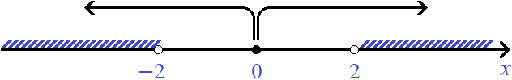
Ответ: x ∈ (−∞ ; −2) ∪ (2 ; +∞)
Обратите внимание, что границы −2 и 2 не включены в соответствующие промежутки. Это потому, что при подстановке этих чисел в исходное неравенство, получается неверное неравенство.
Теперь немного поменяем наш пример. В неравенстве|x| > 2 поменяем знак > на знак <
|x| < 2
Решим это неравенство.
Как и раньше для начала раскрываем модуль. Если подмодульное выражение больше или равно нулю, то получим неравенство x < 2. Решениями этого неравенства являются все числа, мéньшие двух. Отметим их:
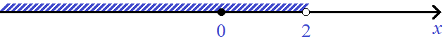
А если подмодульное выражение меньше нуля, то получим неравенство −x < 2. Умнóжим обе части этого неравенства на −1. Тогда получим неравенство x > −2. Решениями этого неравенства являются все числа, бóльшие −2. Отметим эти решения на том же рисунке, где мы отметили решения для неравенства x < 2.
Для наглядности, решения неравенства x > −2 отметим красным цветом:
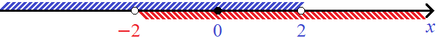
Если выражение |x| это расстояние от начала координат до точки x, то неравенство |x| < 2 говорит, что это расстояние меньше чем 2. На рисунке видно, что от начала координат расстояния, мéньшие двух, лежат в промежутках от −2 до 0 и от 0 до 2
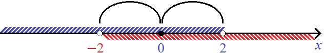
А эти расстояния одновременно будут принадлежать промежуткам x < 2 и x > −2
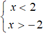
Обратите внимание, что в этот раз промежутки обрамлены знáком системы, а не знáком совокупности как в прошлом примере. Это означает, что значения x одновременно удовлетворяют обоим неравенствам (промежуткам x < 2 и x > −2)
То есть решением неравенства |x| < 2 является пересечение промежутков x < 2 и x > −2. Напомним, что пересечением двух промежутков является промежуток, состоящий из чисел, которые принадлежат как первому промежутку так и второму:
x ∈ (−2 ; 0) ∩ (0 ; 2)
Знак пересечения ∩ читается как «и». Тогда запись x ∈ (−∞ ; 2) ∩ (−2 ; +∞) можно прочитать так:
Значение переменной x одновременно принадлежит промежутку (−∞ ; 2) и промежутку (−2 ; +∞)
Действительно, если подставить какое-нибудь значение x, являющееся решением неравенства |x| < 2, то это значение будет принадлежать одновременно промежутку (−∞ ; 2) и (−2 ; +∞).
Например, число 1 является решением исходного неравенства |x| < 2
|1| < 2 ⇔ 1 < 2
Значение 1 одновременно принадлежит промежутку (−∞ ; 2) и промежутку (−2 ; +∞)
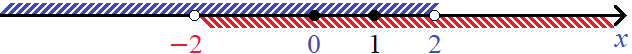
Также, значение 1 удовлетворяет обоим неравенствам системы
А если к примеру подставить значение, не являющееся решением неравенства |x| < 2, то это значение не будет одновременно принадлежать промежуткам (−∞ ; 2) и (−2 ; +∞). Например, значение 7
|7| < 2 ⇔ 7 < 2
Несмотря на то, что значение 7 принадлежит одному из промежутков, а именно промежутку (−2 ; +∞), данное значение не является решением исходного неравенства, поскольку оно не удовлетворяет ему. Также, данное значение не принадлежит одновременно обоим промежуткам: (−∞ ; 2) и (−2 ; +∞).
Для неравенства |x| < 2 ответ можно записать покороче:
x ∈ (−2 ; 2)
Из рассмотренных примеров видно, что решением неравенства с модулем может быть либо объединение промежутков либо их пересечение.
В первом примере мы решили неравенство |x| > 2, то есть неравенство вида |x| > a. Это неравенство при котором модуль больше какого-нибудь числа или буквенного выражения. Решением такого неравенства является объединение решений неравенств, получающихся после раскрытия модуля исходного неравенства. Неравенства, получающиеся после раскрытия модуля, следует записывать в виде совокупности:
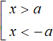
Совокупность свóдится потому, что итоговые решения будут удовлетворять хотя бы одному из неравенств, полученных после раскрытия модуля исходного неравенства.
Во втором примере мы решили неравенство |x| < 2, то есть неравенство вида |x| < a. От предыдущего неравенства оно отличается только знáком. Но это неравенство при котором модуль меньше какого-нибудь числа или буквенного выражения. Решением такого неравенства является пересечение решений неравенств, получающихся после раскрытия модуля исходного неравенства. Неравенства, получающиеся после раскрытия модуля, следует записывать в виде системы:
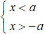
Система записывается потому, что итоговые решения будут удовлетворять обоим неравенствам, полученным после раскрытия модуля исходного неравенства.
Эти же правила сохраняются и для неравенств, содержащих знаки ≥ и ≤
Например, решим неравенство |x| ≥ 1. Модуль больше или равен числу. Поэтому решением будет объединение решений неравенств, которые получатся после раскрытия модуля. После раскрытия модуля и выполнения необходимых тождественных преобразований, получим совокупность неравенств x ≥ 1 и x ≤ −1
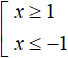
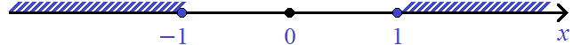
Решением служит объединение промежутков x ≤ −1 и x ≥ 1
x ∈ (−∞ ; −1] ∪ [1 ; +∞)
Обратите внимание, что границы −1 и 1 включены в соответствующие промежутки. Это потому что при подстановке этих чисел в исходное неравенство, получается верное неравенство.
Решим теперь к примеру неравенство |x| ≤ 1. Модуль меньше или равен числу. Поэтому решением будет пересечение решений неравенств, которые получатся после раскрытия модуля. После раскрытия модуля и выполнения необходимых тождественных преобразований, получим систему неравенства: x ≤ 1 и x ≥ −1
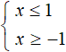
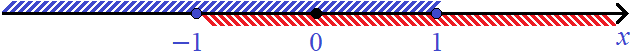
Решением служит пересечение промежутков x ≤ 1 и x ≥ −1
x ∈ (−∞ ; 1] ∩ [−1 ; +∞)
или покороче:
x ∈ [−1 ; 1]
Обратите внимание, что границы −1 и 1 включены в соответствующие промежутки. Это потому что при подстановке этих чисел в исходное неравенство, получается верное неравенство.
Аналогично решаются неравенства, в левой части которого модуль, а справа не просто число, а буквенное выражение.
Пример 4. Решить неравенство |7x − 6| < x + 12
Решение
Для начала раскроем модуль. Вспоминаем, что если неравенство содержит знак < или ≤, то неравенства получившиеся после раскрытия модуля, следует записать в виде системы. Это будет означать, что итоговые решения будут удовлетворять обоим неравенствам.
Итак, после раскрытия модуля получим следующую систему:
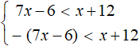
В данном случае система содержит не совсем элементарные неравенства как в прошлых примерах. Данные неравенства следует упростить, используя известные тождественные преобразования.
Раскроем скобки во втором неравенстве. Тогда получим следующую систему:
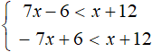
В обоих неравенствах выражения, содержащие неизвестные, перенесём в левую часть, а числовые выражения — в правую. Затем приведём подобные слагаемые. Тогда получим систему:
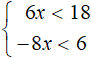
В первом неравенстве разделим обе части на 6. Во втором неравенстве разделим обе части на −8. Тогда получим окончательную систему:
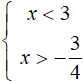
Изобразим решения на координатной прямой:
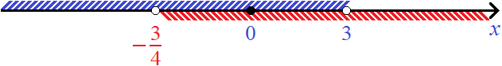
Решением является пересечение промежутков (−∞ ; 3) и
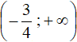
, то есть промежуток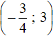
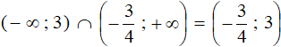
Ответ:
Пример 5. Решить неравенство |1 − 2x| ≥ 4 − 5x
Решение
Для начала раскроем модуль. Вспоминаем, что если неравенство содержит знак > или ≥, то неравенства получившиеся после раскрытия модуля, следует записать в виде совокупности:
После раскрытия модуля получим следующую совокупность:
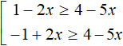
Выполним необходимые тождественные преобразования в обоих неравенствах. В результате получим:
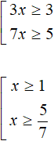
Изобразим решения на координатной прямой:
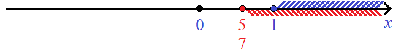
Решением является объединение промежутков
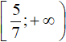
и [1 ; +∞), то есть промежуток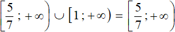
Ответ: .
Задания для самостоятельного решения
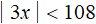
Показать решение
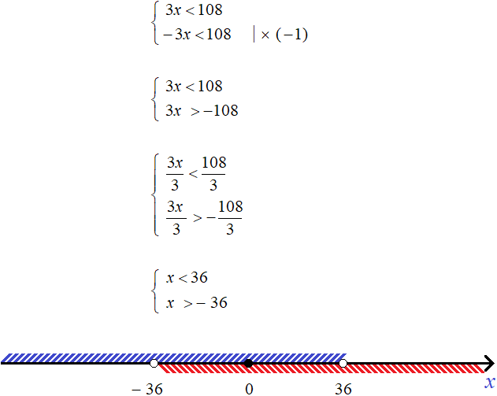
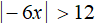
Показать решение
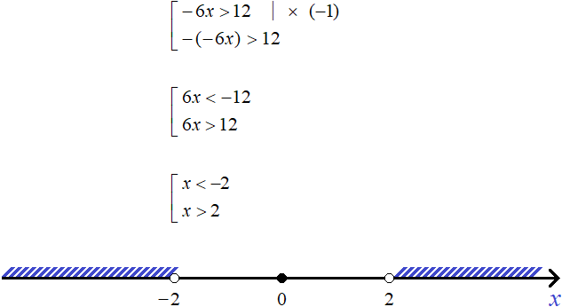
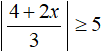
Показать решение
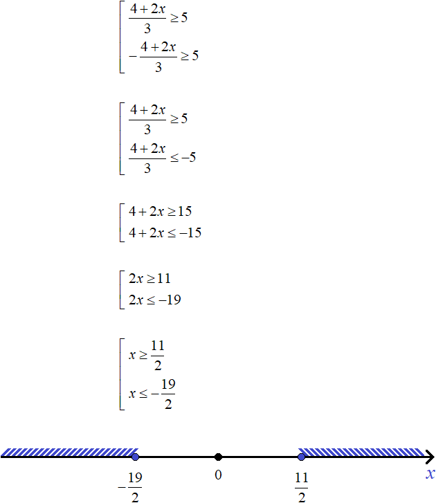
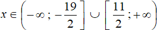
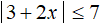
Показать решение
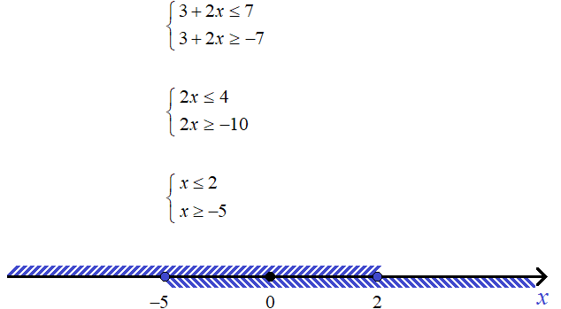
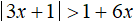
Показать решение
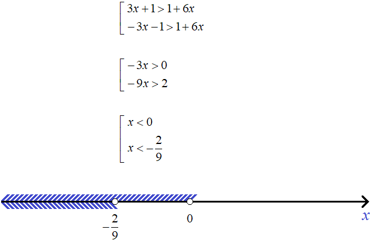
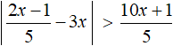
Показать решение
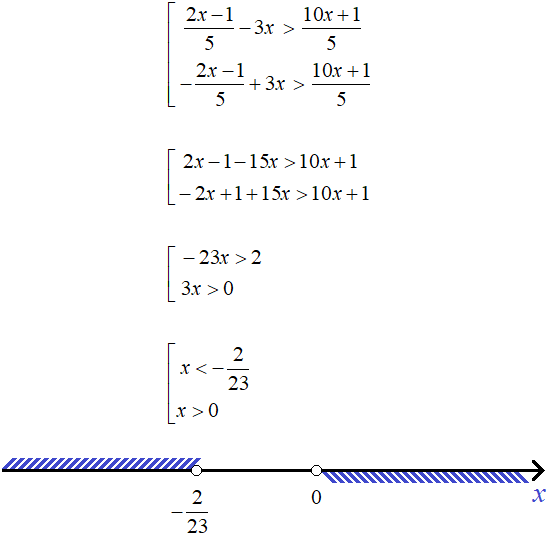
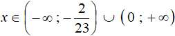